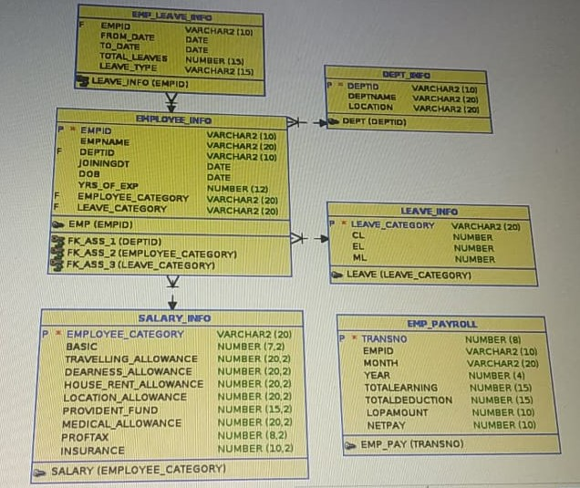
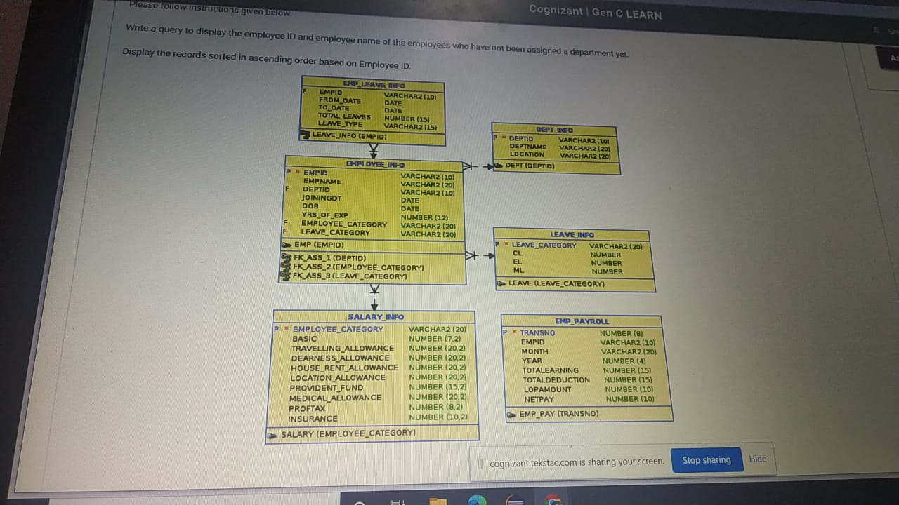
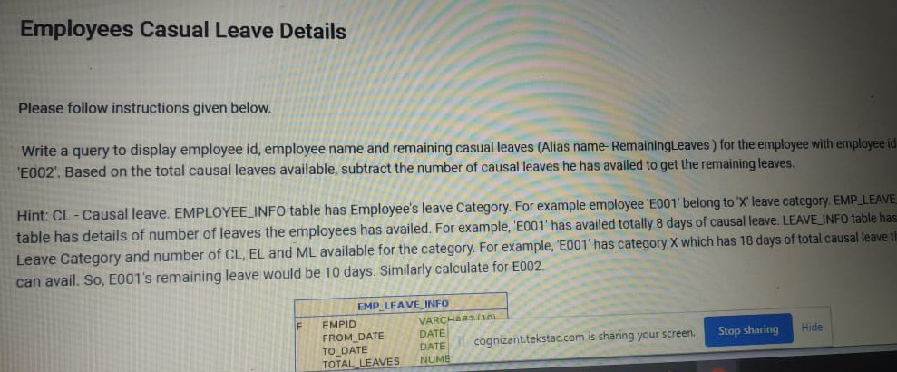

-- -----------------------------------------------------------------------------------------------------------------------------------------------------------------------------------------------------
-- EMPLOYEE SCHEMA :-
-- ---------------------------
-- 1) write a query to display employee id, employee name and remaining actual leaves(alias name : Remaining Leaves)
-- for the employee with employee id 'E002'. based on the total casual leaves available,
-- subtract the number of casual leaves he has availed to get the remaining leaves.
solu:)--
select ei.empid, ei.empname, (sum(eli.total_leaves) - li.cl) as "Remaining Leaves"
from emp_leave_info eli JOIN employee_info ei on eli.empid = ei.empid JOIN leave_info li on li.leave_category = ei.leave_catergory
where ei.empid='E002';
--2) write a query to display the employee id and employee name of the employees who have not been assigned a department yet.
-- (Display the records sorted in ascending order based on employee id)
solu) --
select empid, empname from employee_info where deptid is null order by empid asc;
-- 3) write a query to display the employee id, employee name, department id , department name of all employees who has a department assigned
-- and department location is 'CHENNAI'?
solu) --
select e.empid, e.empname, d.deptname from employee_info e join dept_info d
on e.deptid = d.deptid
where d.location = 'CHENNAI'
order by e.empid asc;
--4) write a query to display the employee id, employee name, basic pay of all employees who are in employee category 'A' ?
solu:)--
select e.empid, e.empname, s.basic from employee_info e join salary_info s
on e.employee_category = s.employee_category
where e.employee_category = 'A'
order by e.empid;
--5) write a query to display the employee id, employee name and joining date of the employees who joined before 2005?
solu:)--
select empid, empname, joiningdt from employee_info
where to_char(to_date(joiningdt),'yyyy')<2005
order by empid asc;
--6) write a query to display the employee id, employee name, net pay of an employee whose id is "E001" for the month of april ?
solu:)--
select e.empid, e.empname, p.netpay from employee_info e join emp_payroll p
on e.empid = p.empid
where e.empid = 'E001' and p.month = 'Apr' order by e.empid asc;
--7) write a query to display the department id and no., of employees in each department sorted by department id ( Exclude the department with null values)
solu:)--
select d.deptid, count(e.empname) as "Number of employees" from dept_info d join employee_info e
where deptid <> null group by d.deptid order by deptid asc;